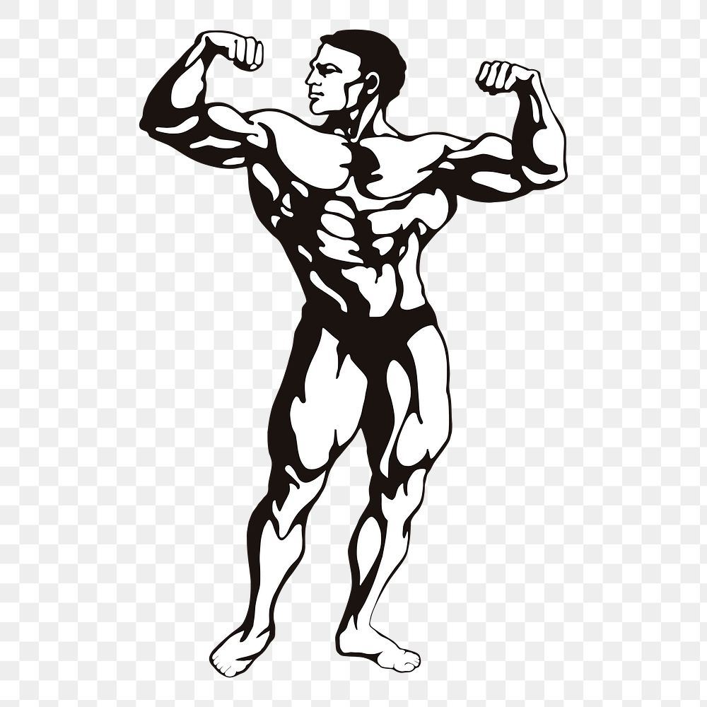

Pain & Gain
 The picture on the left is an ideal representation of a classic bodybuilder physique. Every bodypart must be proportionate and conditioned, so the overall look is pleasing to the eye, or "aesthetic".Bodybuilding is a sport, which requires sacrifice. It is not an easy journey toward greatness. To truly maximize your potential, you must dedicate years of your life to hard work.
Hard work in this context means excersizing 3-5 times per week, eating well-balanced meals, good sleeping & resting, educating yourself through books/internet and most crucial of all; studying and experimenting your SELF.